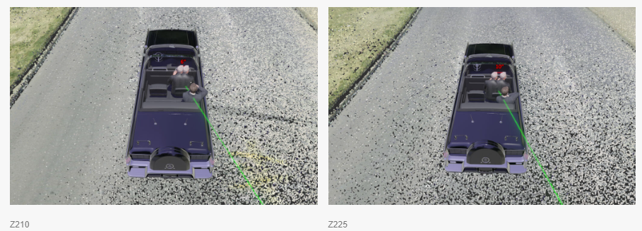

JFK Assassination
Timeline of Events
Lee Harvey Oswald
Early Years
- Oswald was born in New Orleans to Marguerite Claverie (mother) and Robert Edward Lee Oswald (father)
- Edward John Pic, Jr and Marguerite were married but divorced when she was pregnant, Edward didn't want a child
- Edward saw the boy until he was one year old but not again after that, he financially supported the child until he was 18
- Marguerite remarried to Robert Edward Lee Oswald in 1933 and Robert Edward Lee Oswald Jr was born on 1 April 1934
- In August 1939, Robert died of a heart attack
- On 18 Oct 1939, Lee Harvey Oswald was born
- In Jan 1942, Lee and his brothers were accepted into Bethlehem Children's orphanage, due to Marguerite not being able to financially support them
- The boys stayed there for 13 months and regularly saw their mother
- In 1944, Mrs. Oswald met an electrical engineer Edwin A. Ekdahl, Lee was withdrawn from the orphanage and they all moved to Dallas together
- However, when they arrived in Dallas Mrs. Oswald decided not to marry Ekdahl, Robert and Edward still joined their mother in Dallas
- In 1945, Mrs. Oswald again changed her mind and married Ekdahl after all, Ekdahl got along well with the boys, especially Lee
- In 1946, the Ekdahl marriage broke down and Marguerite left him, taking the boys with her to Louisianna
- In 1947, the Ekdahls reunited and they all moved to Fort Worth
- In Jan 1948, Marguerite and Ekdahl divorced after she found him having an arrair.
- During this time in Texas, Lee was described as being a quiet solitary boy in school
- In 1952, Marguerite and Lee moved to New York to be with John Pic, who was a wife and baby there
- However, Marguerite and John's wife didn't get along and were asked to leave when Lee pulled a pocket knife on John's wife during a quarrell
- During the same incident, Lee hit Marguerite, ruining John's previously healty and good relationship with Lee
- Marguerite and Lee moved uptown to the Bronx, Lee was enrolled in school but did poorly due to irregular attendance
- Lee would be involved in a truancy case for the next few months and he returned fully to school in the seventh grade in 1953
- In Jan 1954, Marguerite, against the wishes of the court, took Lee back to New Orleans
- In New Orleans, Lee was continued to be remembered as a lonely and quiet boy and was introduced to Communist literature at some point
- Between 1955-56 Lee has various jobs in New Orleans
- In July 1956, Lee and his mother moved back to Fort Worth in anticipation for Lee to join the Marines when he turned 17
- In October 1956, Lee wrote to the Socialist Party of America: "I am a Marxist, and have been studying socialist principles for well over fifteen months I am very interested in your Y.P.S.L."
Marines
Conspiracies
Magic Bullet Theory
Knotts Lab Report
-
Oswald shot Kennedy twice, the Warren Commission found that the bullet that hit Kennedy in the neck was the same bullet that hit Connally in the back
[1]
-
Specifically, the report said that the bullet "hit Kennedy in the back, exited his neck, entered Governor Connally in the right armpit, exited his chest, went through his right wrist, and embedded in his left thigh"
[1]
-
In November 2023, Knott Lab presented a digital reconstruction of the assassination that refutes the "single bullet theory"
[1]
-
Knott Lab used a 3D laser scanner to construct a digital scene of the Dealey Plaza
[1]
-
The lab then used historic photos and the Zapruder film to sync the digital reconstruction
[1]
-
These images show the reconstruction of frame 210 and 225 of the Zapruder film
[1]

- Rebuttals
[1]
:
- "The bullet struck JFK and Connally at F222"
- "They cannot duplicate every single factor and every single variable of every condition of that nanosecond moment on November 22, 1963."
- "Where do these experts think that the bullet went after it exited Kennedy if it didn't hit Connally?"
- "Connally himself felt he was hit around Z236."
Investigations
Warren Commission
Rockefeller Commission
Church Commission
US House Select Committee on Assassinations (HSCA)